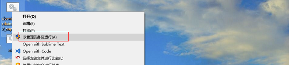

M5Stack-Core Get Started(Windows, Arudino)¶
Note
If your OS is MacOS, please click here.
CONTENT¶
Note
If you want to upgrade the M5Stack Lib, please view this article upgrade M5Stack Lib
Setting Environment¶
Note
Before setting the development environment, we suggest you confirm whether the USB driver has installed. If not, please view this article establish_serial_connection.
1. Install Git¶
If you has installed Git, please following setp 2 straight. Otherwise, download the client of Git and install it.
2. Install Arduino IDE¶
download address
https://www.arduino.cc/en/Main/Software

Double click to install Arduino IDE


3. Download Arduino-ESP32 Support¶
Download the batch file download_arduino_esp32_support.bat, and execte it as Administrator.
Then a new window will appear as shown below. Please waiting for cloning…

As shown below, it means Arduino-ESP32 Support has completed.

4. Download the M5Stack Lib¶
Open Arduino IDE, then Select Sketch -> Include Library -> Manage Libraries... Search M5Stack and install it


Note
As shown below, it means you need update

Example¶
The USB cable connects to M5Stack Core, then select your serial port which is connected M5Stack Core. Select a demo example, compile and upload.
1. Execute a example likes FactoryTest.ino¶
Select your board name, baudrate, the specified serial port: M5Stack-Core-ESP32, 921600, COM4(Now, my serial port which is connected with PC is COM4)

Then select an example likes FactoryTest.ino

Upload it

2. New a M5Stack program¶
Open Arduino IDE, then new a .ino file, rename it as my_test.ino
Copy the below code to my_test.ino
#include <M5Stack.h>
// the setup routine runs once when M5Stack starts up
void setup(){tack
// Initialize the M5Stack object
M5.begin();
// LCD display
M5.Lcd.print("Hello World!");
M5.Lcd.print("M5Stack is running successfully!");
}
// the loop routine runs over and over again forever
void loop() {
}
compile it and upload, the M5Stack screen will show “Hello World!” “M5Stack is running successfully!”